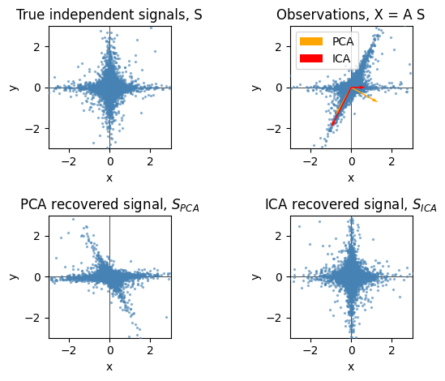

22.2.2. FastICA on 2D point clouds#
Esempio disponibile sul sito di scikit-learn.
22.2.2.1. Librerie e funzioni di comodo#
22.2.2.1.1. Import librerie#
%reset -f
import numpy as np
from sklearn.decomposition import PCA, FastICA
import matplotlib.pyplot as plt
22.2.2.1.2. Funzioni utili#
### utils
def plot_samples(S, axis_list=None):
""" util function for plotting scatter plots """
plt.scatter(
S[:,0], S[:,1], s=2, marker="o", zorder=10, color="steelblue", alpha=0.5
)
if axis_list is not None:
for axis, color, label in axis_list:
x_axis, y_axis = axis / axis.std()
plt.quiver(
(0, 0),
(0, 0),
x_axis,
y_axis,
zorder=11,
width=0.01,
scale=6,
color=color,
label=label,
)
plt.hlines(0, -3, 3, color="black", linewidth=0.5)
plt.vlines(0, -3, 3, color="black", linewidth=0.5)
plt.xlim(-3, 3)
plt.ylim(-3, 3)
plt.gca().set_aspect("equal")
plt.xlabel("x")
plt.ylabel("y")
22.2.2.2. Generazione campione#
La formulazione più comune dei metodi usa l’espressione
\[\mathbf{X} = \mathbf{A} \, \mathbf{S} \ ,\]
che lega osservazioni \(X\) e segnali \(S\) tramite la matrice di mixing \(A\). Per le strutture dati di Python, è conveniente (todo provare! O è dovuto solo alla forma mentis di chi usa Python?) scrivere la relazione trasposta,
\[\mathbf{X}^T = \mathbf{S}^T \, \mathbf{A}^T \ .\]
#> Sample data generation
# Initialize a default random number generator
rng = np.random.default_rng(42)
# rng = np.random.RandomState(42)
# np.random.RandomState() is deprecated! Use random.default_rng(),
# but FastICA needs a np.random.RandomSstate as an optional input random_state
# Create data: non-isotropic mixing of 2 t-Student variables:
# 1. Create signals S, as 2 t-Student distributions
# 1. sampling from a t-Student distribution with degrees of freedom df
# matrix S has dimensions (n_rows, n_cols) = (n_samples, n_dim), interpreting
# each row as a sample, and each row as a dimension of the data
df, n_samples, n_dims = 1.5, 10000, 2
S = rng.standard_t(df, size=(n_samples, n_dims))
# 2. scale one component
S[0,:] *= 2.0
plt.subplot(1, 2, 1)
plot_samples(S / S.std())
plt.title("True independent signals, S")
# 3. Mix components
A = np.array([[1, 1], [0, 2]]) # Mixing matrix
X = np.dot(S, A.T) # Generate observations
plt.subplot(1, 2, 2)
plot_samples(X / X.std())
plt.title("Observations, X = A S")
Text(0.5, 1.0, 'Observations, X = A S')
22.2.2.3. ICA e PCA#
#> PCA
pca = PCA()
S_pca_ = pca.fit(X).transform(X)
#> ICA
ica = FastICA(random_state=3, whiten="arbitrary-variance")
# ica = FastICA(random_state=np.random.RandomState(42), whiten="arbitrary-variance")
S_ica_ = ica.fit(X).transform(X) # Estimate the sources
22.2.2.4. Risultati#
#> Print results:
# Normalization: principal and independent components are usually defined up to a multiplicative factor;
# PCA and ICA provides information abouth the "shape" of the main components in a signal; usually, it's a
# good practice to have normalized info/results, that contains only shape info and no other arbitrary (non)-info
# - PCA results are usually normalized
# - ICA results seem to be not normalized by the algorithm; easy to perform normalization, as done below,
# to have unit-norm vectors to be easily compared with PCA.
# If normalization done outside functions, remember to normalize both signals and mixing matrix
print("\nPCA, principal components (rows of the matrix)")
print(pca.components_ )
print("\nICA. indepdent components (rows of the matrix)")
print(ica.mixing_.T) # non normalized
# print(ica.mixing_.T / np.linalg.norm(ica.mixing_.T,axis=1)[:, np.newaxis]) # normalized
print()
PCA, principal components (rows of the matrix)
[[-0.48647086 -0.8736968 ]
[ 0.8736968 -0.48647086]]
ICA. indepdent components (rows of the matrix)
[[-9.46908181e+02 -1.89462935e+03]
[ 6.85936578e+02 -8.07940837e-01]]
#> Plots
plt.figure()
plt.subplot(2, 2, 1)
plot_samples(S / S.std())
plt.title("True independent signals, S")
axis_list = [(pca.components_.T, "orange", "PCA"), (ica.mixing_, "red", "ICA")]
plt.subplot(2, 2, 2)
plot_samples(X / np.std(X), axis_list=axis_list)
legend = plt.legend(loc="upper left")
legend.set_zorder(100)
plt.title("Observations, X = A S")
plt.subplot(2, 2, 3)
plot_samples(S_pca_ / np.std(S_pca_))
plt.title("PCA recovered signal, $S_{PCA}$")
plt.subplot(2, 2, 4)
plot_samples(S_ica_ / np.std(S_ica_))
plt.title("ICA recovered signal, $S_{ICA}$")
plt.subplots_adjust(0.09, 0.04, 0.94, 0.94, 0.26, 0.36)
plt.tight_layout()
plt.show()
